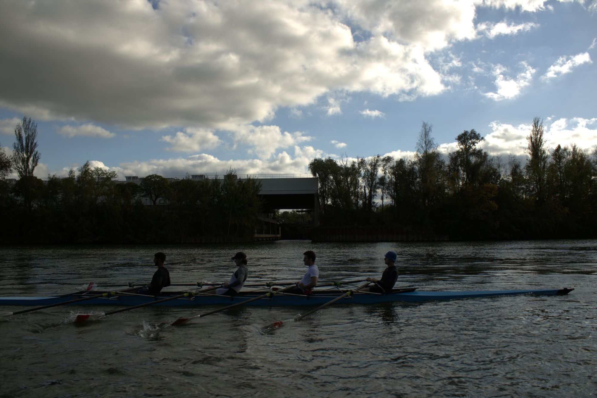
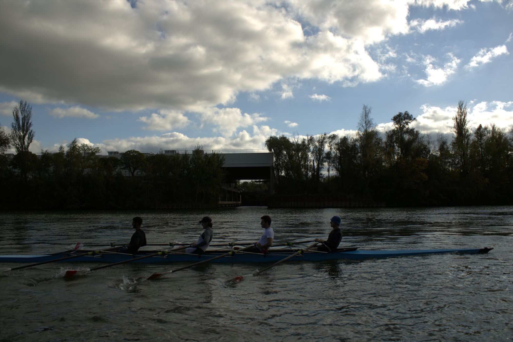
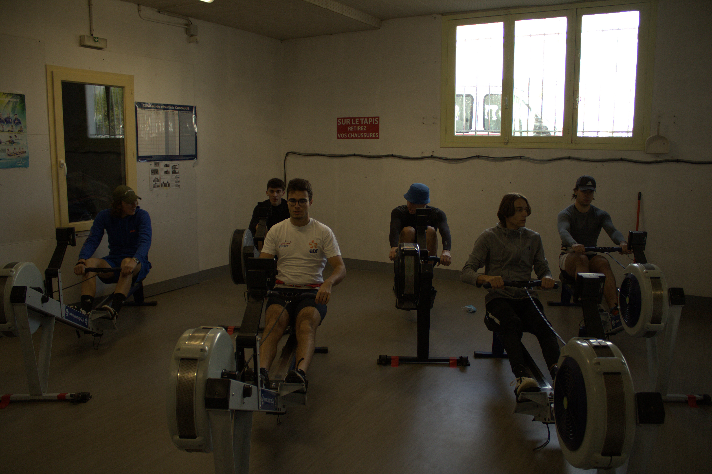
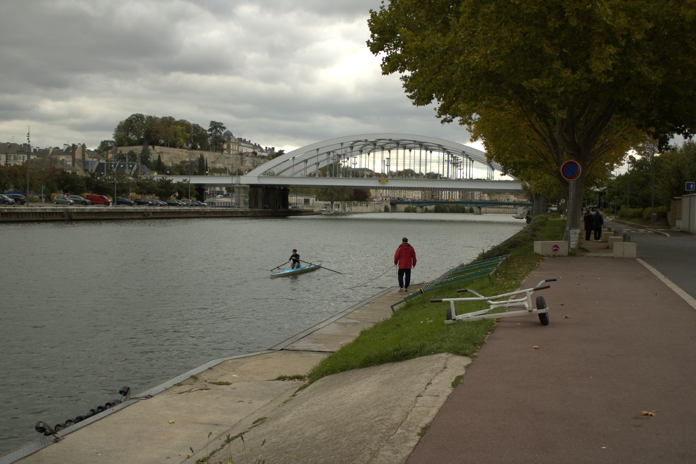
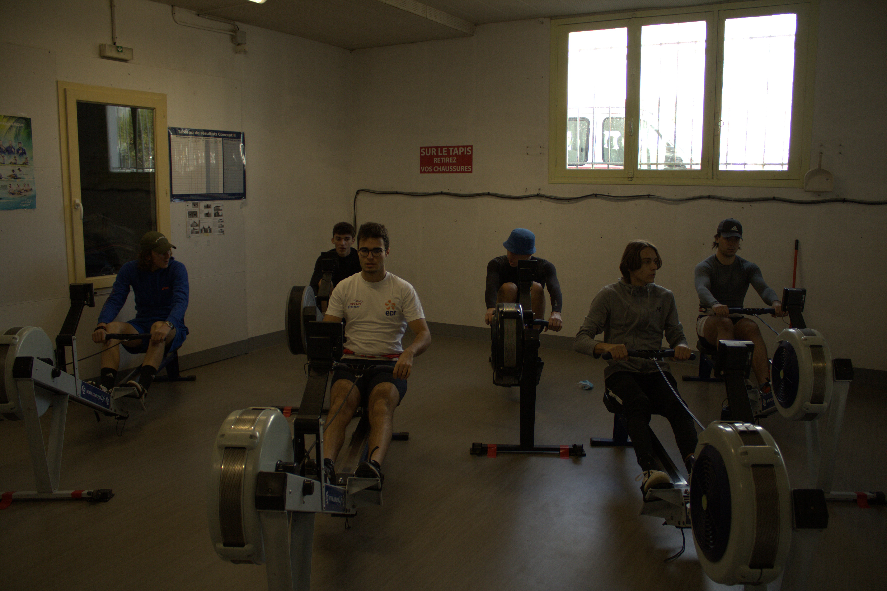
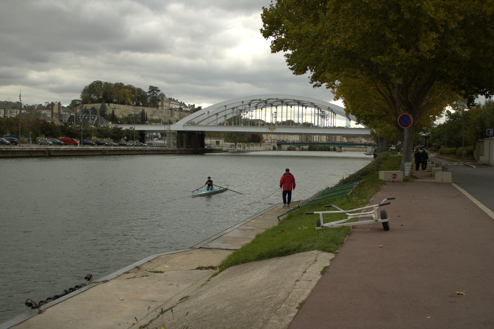

 




Entrainements
La saison démarre pour CY Rowing Club.
Avec des entrainements tous jeudis et samedis à 14 h à la Société Nautique de l’Oise.
Les rameurs les plus aguerrisse préparent aux différentes compétitions universitaires
tandis que d'autres découvrent l'aviron dans un bel esprit de cohésion et d'équipe.
Rejoignez-nous pour défendre les couleurs de CY Tech ou bien pour pratiquer ce sport en loisir


Journée d'initiation à l'aviron...
Un grand merci à tous les participants! On espère que cela vous a plu et qu'on se reverra bientôt sur l'eau!
Merci particulièrement aux coach et au président pour cette belle après-midi!

Le shop arrive bientot
Un shop à l'effigie du club ouvrira bientôt. En ligne ou en nous contactant, plein de surprises vous attendent...
CY Rowing club se lance!
La première association d’aviron de CY Cergy Paris Université vient de se créer afin de représenter l’université dans de nombreuses compétitions universitaires ainsi que de regrouper les étudiants au sein d’un même sport pour y apprendre rigueur, dépassement de soi, esprit d’équipe, partage, goût de l’effort, ... En étroite collaboration avec la Société Nautique de l’Oise, CY Rowing Club a à sa disposition des coachs, des infrastructures et des équipements de haut niveau.